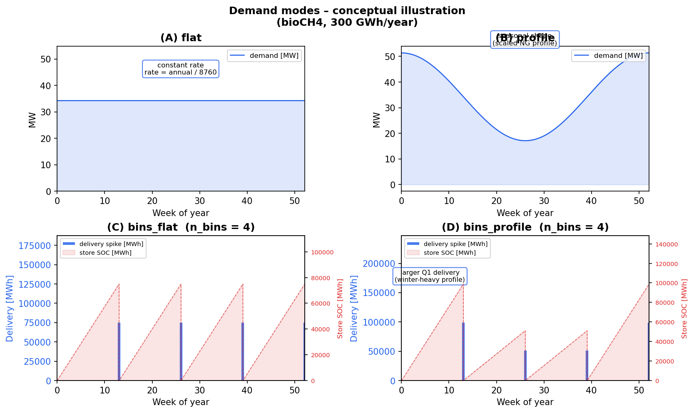
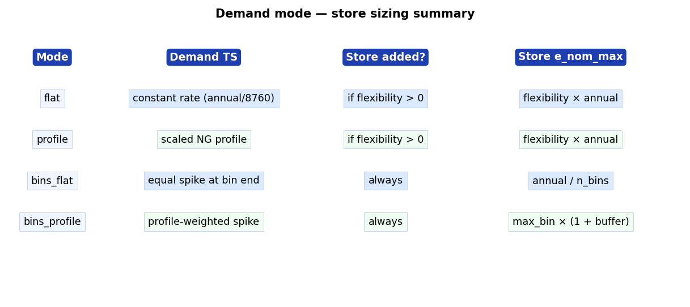

Setting Product Demands#
GreenBubble supports four demand modes per product. Each mode controls the shape of the demand time series and whether (and how large) a flexibility store (delivery buffer) is added to the network.
The demand system is configured entirely in config/config.yaml under the
targets key. Seasonal profiles for profile and bins_profile modes
are loaded from data/common/ — a year-agnostic folder separate from the
per-year data/Inputs_{year}/ directories.
Demand modes at a glance#
{kind=link}

Mode |
Demand TS |
Store added? |
Store |
|---|---|---|---|
|
constant rate (annual / 8760) |
if |
|
|
scaled NG seasonal profile |
if |
|
|
equal spike at each bin end |
always |
|
|
profile-weighted spike at each bin end |
always |
|
{kind=link}

Configuration keys#
For each product (CH4, H2, MeOH) the following keys live inside
the targets block of config/config.yaml:
targets:
# ── bioCH4 ──────────────────────────────────────────────────────────
demand_CH4: 300000 # MWh/year (or max production if driver='price')
CH4_demand_mode: flat # flat | profile | bins_flat | bins_profile
CH4_bins: 1 # number of equal time bins (ignored for flat/profile)
CH4_flexibility: 0.02 # fraction of annual demand used as store e_nom_max
# (only for flat/profile; 0 = rigid, no store)
# ── H2 ──────────────────────────────────────────────────────────────
demand_H2: 0
H2_demand_mode: bins_flat
H2_bins: 1
H2_flexibility: 0.0
# ── Methanol ─────────────────────────────────────────────────────────
demand_meoh: 4000
MeOH_demand_mode: bins_flat
MeOH_bins: 1
MeOH_flexibility: 0.0
# ── shared ──────────────────────────────────────────────────────────
demand_store_buffer: 0.0 # extra headroom for bins_profile stores
# ── seasonal profiles (only relevant for profile / bins_profile modes) ──
# null → use data/common/NG_demand_DK_profile.csv (seeded automatically)
# path → any semicolon-separated CSV in data/common/ or elsewhere
CH4_profile: null
H2_profile: null
MeOH_profile: null
Mode details#
flat — constant delivery#
The product is demanded at a constant MW rate throughout the year:
rate = annual_demand / 8760 [MW]
A flexibility store is added when flexibility > 0. Its maximum capacity
is flexibility × annual_demand MWh. The store is cyclic, so the optimiser
can shift some production within the year while meeting the total annual demand.
Setting flexibility = 0 makes the demand completely rigid (no store).
Typical use: biogas-derived CH4 with a small intra-day buffer
(flexibility ≈ 0.01–0.05).
profile — seasonally shaped delivery#
The demand is shaped by the Danish natural-gas consumption seasonal profile
(winter-heavy). The profile is normalised so the annual total equals
annual_demand. A flexibility store is added under the same rules as
flat. The reference profile can be changed by the user
Typical use: products sold to the NG grid with seasonal off-take variation.
bins_flat — periodic equal deliveries#
The year is divided into n_bins equal time windows. At the end of each
bin a single delivery of annual_demand / n_bins MWh is required. Between
deliveries the demand is zero — the optimiser accumulates product in the
delivery buffer store and empties it at the bin endpoint.
The delivery store e_nom_max is set to annual / n_bins (one bin’s worth),
preventing the optimiser from carrying surplus across more than one period.
Common n_bins values:
|
Delivery frequency |
|---|---|
1 |
once per year (end of year) |
12 |
once per month |
52 |
once per week |
N |
N equal intervals |
Typical use: H2 delivered by truck or pipeline at regular intervals.
bins_profile — profile-weighted periodic deliveries#
Same binning as bins_flat, but each bin’s delivery is proportional to the
integral of the NG seasonal profile within that bin. Winter bins receive more
product than summer bins.
The delivery store e_nom_max is set to
max_bin_demand × (1 + store_buffer).
The demand_store_buffer key (default 0.0) adds extra headroom as a
fraction, e.g. 0.05 gives +5%.
Typical use: products with seasonal demand profiles sold in periodic batches.
Seasonal profiles#
profile and bins_profile modes require a reference time series that
represents the seasonal shape of demand. Profiles live in data/common/
(not in the per-year data/Inputs_{year}/ directories) so that:
the same profile can be reused across any optimization year without re-downloading;
different products can have different profiles;
user-supplied profiles from any source can be dropped in without touching the preprocessing scripts.
Built-in default#
data/common/NG_demand_DK_profile.csv — the Danish natural-gas consumption
seasonal profile (daily data, winter-heavy). It is seeded automatically the
first time any year is preprocessed and does not need to be managed manually.
Year remapping#
The profile’s timestamps are remapped to the optimization year automatically. A profile from 2023 is therefore valid for a 2024 or 2022 optimization run — only the seasonal shape (day-of-year pattern) is used, not the absolute dates.
Using a custom profile#
Create a semicolon-separated CSV with a datetime index (daily or hourly) and one numeric column representing demand or consumption intensity.
Place it in
data/common/(or any path reachable from the project root).Set the
*_profilekey for the relevant product:targets: CH4_demand_mode: bins_profile CH4_profile: "data/common/my_biogas_season.csv"
The file format must match the project standard (semicolons, datetime index in the first column, values in the second column).
The delivery buffer store#
For bins_flat and bins_profile modes the store is always added. For
flat and profile modes it is added only if flexibility > 0.
The store represents a product tank or pipeline buffer:
e_cyclic = True— start-of-year SOC equals end-of-year SOC (annual balance enforced).e_nom_extendable = True— the optimiser sizes the tank up toe_nom_max.Marginal cost is zero (no cost to hold product in the buffer).
Adding demand for a new product#
Add an annual demand target in
config.yaml:targets: demand_MyProduct: 50000 # MWh/year MyProduct_demand_mode: bins_flat MyProduct_bins: 12 MyProduct_flexibility: 0.0
In
scripts/preprocessing.py, callbuild_product_demand_tsinsidebuild_demands_TS:myproduct_ts, myproduct_e_nom_max = build_product_demand_ts( annual_demand = cfg["targets"]["demand_MyProduct"], mode = cfg["targets"].get("MyProduct_demand_mode", "bins_flat"), snapshots = snapshots, profile_ts = ng_profile, n_bins = cfg["targets"].get("MyProduct_bins", 1), flexibility_fraction = cfg["targets"].get("MyProduct_flexibility", 0.0), store_buffer = cfg["targets"].get("demand_store_buffer", 0.0), col_name = "demand MWh", ) inputs_dict["MyProduct_demand_ts"] = myproduct_ts inputs_dict["MyProduct_store_e_nom_max"] = myproduct_e_nom_max
In
scripts/prepare_network.py, wire up the load and delivery store in the relevantadd_<sector>()function following the same pattern used foradd_targets_per_product.
Rolling horizon — demand and store handling#
See also: Rolling Horizon Dispatch Optimisation.
Flat and profile modes#
The delivery store carries a cyclic SOC across the full year in the capacity
expansion run. In rolling horizon (RH) the store is kept non-cyclic
(e_cyclic = False) so each window starts from the SOC carried over from
the previous window rather than an arbitrary optimised value.
The store capacity is left at the optimised value — the RH solver can use the same buffer to absorb hourly variability within each window.
Bins modes (annual, n_bins = 1)#
When a product has a single annual delivery the delivery store accumulates the entire year’s production before releasing it at year-end. This is incompatible with rolling horizon because:
With
e_cyclic = Falsethe optimizer front-loads all production in the first window and ends with a massive surplus.With
e_cyclic = TruePyPSA treats the initial SOC as a free optimisation variable, allowing phantom energy at window start.
The RH solver automatically detects annual point-load products (stores with >95% of throughput concentrated in a single timestep) and:
Redistributes the demand to a flat hourly rate for the RH run.
Caps the delivery store to
2 × (annual / n_windows)MWh, preventing multi-window carry-over while keeping a one-window buffer.
The annual production target is preserved — only the delivery shape within the RH run changes.
Bins modes (n_bins > 1)#
For weekly or monthly bins (n_bins ≥ 12) no redistribution is applied.
Each bin’s delivery is small enough that the store fills and empties within a
single rolling window, so cyclic constraints within each window are naturally
satisfied.